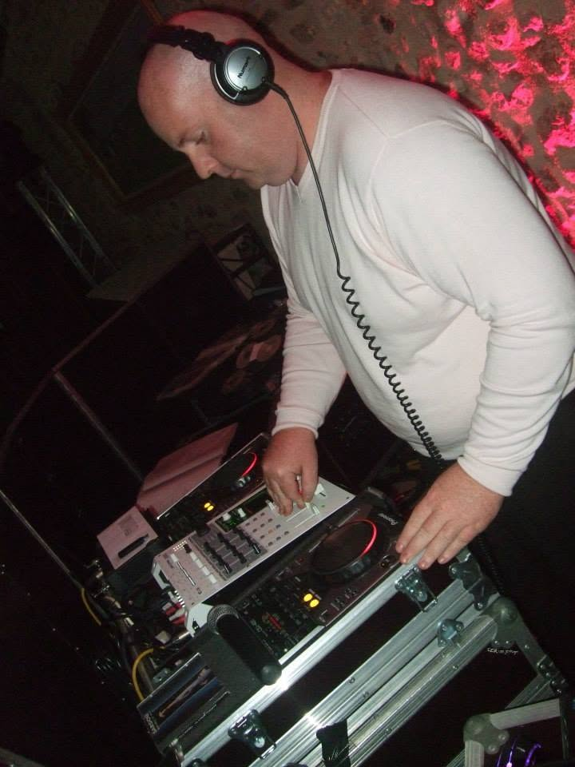
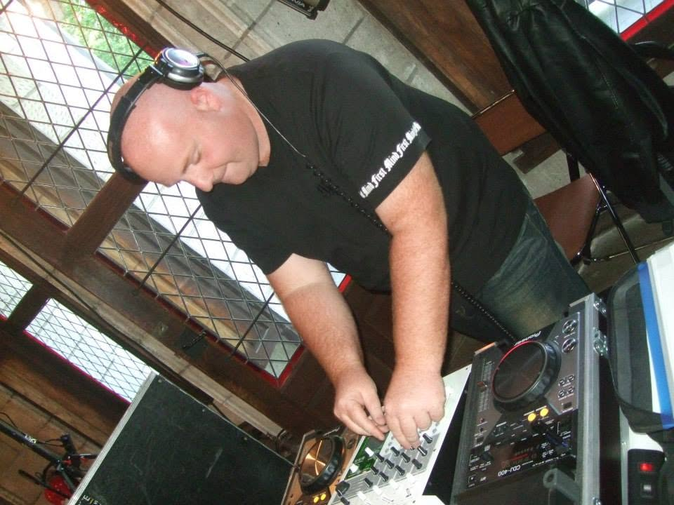
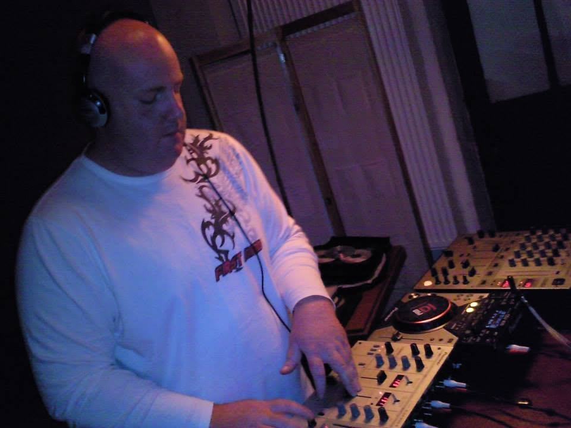
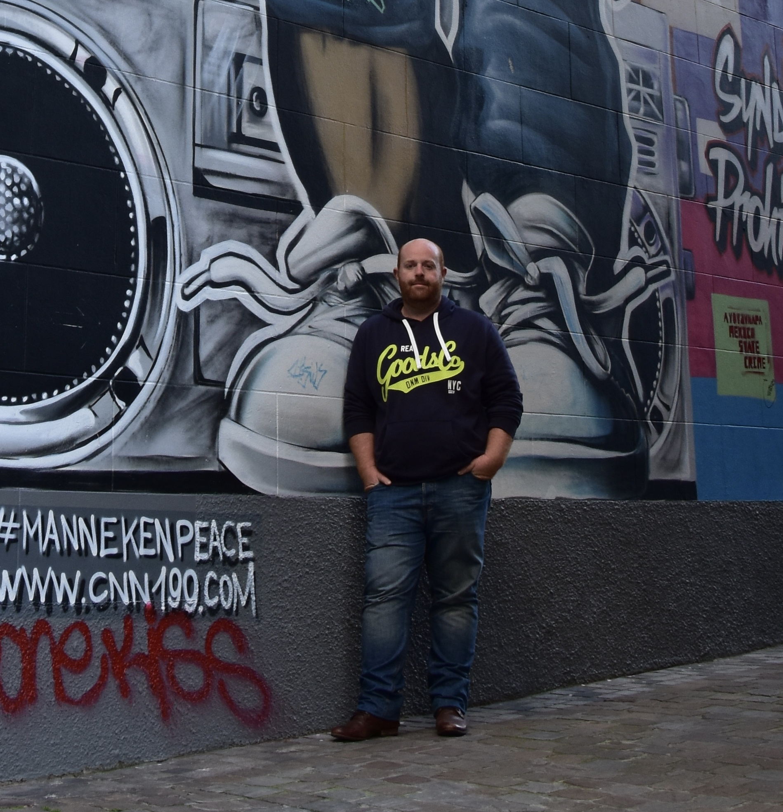
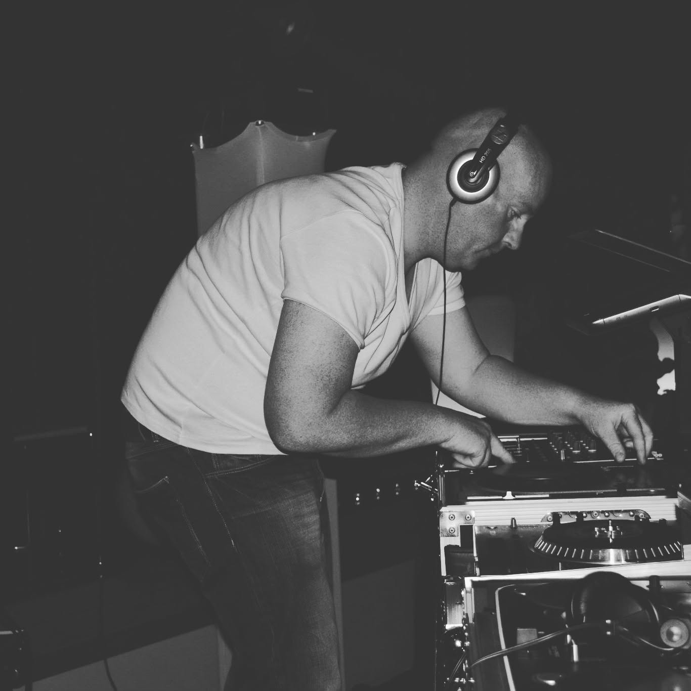

LES PREMIERS SIGNAUX
Electronic Show prend forme autour de Florian Mallet, de la House Music et d’une envie simple : partager une sélection différente, en club comme à la radio. Le projet trouve progressivement son identité et son public.
ARCHIVE 01 — L’HISTOIRE
Electronic Show ne commence pas avec son retour. Son histoire s’écrit depuis 2003, entre clubs, émissions, rencontres et passion pour une musique capable de traverser les années.
Electronic Show prend forme autour de Florian Mallet, de la House Music et d’une envie simple : partager une sélection différente, en club comme à la radio. Le projet trouve progressivement son identité et son public.
Au fil de plus de 150 émissions, le programme dépasse son point de départ. Les données conservées à l’époque font état d’auditeurs recensés dans 32 pays : une portée aujourd’hui historique, issue d’une première vie du projet.
Pendant quinze ans, la vie professionnelle et personnelle de Florian l’emmène vers d’autres projets. Electronic Show se tait, mais la musique ne disparaît jamais vraiment : le mix lui manque et l’envie de transmettre reste présente. Le crash d’un disque dur effacera ensuite une grande partie des fichiers et statistiques de cette première époque, sans en effacer l’histoire.
Quinze années plus tard, Electronic Show renaît sous une forme plus vaste : podcasts, productions originales, actualité, Inside et collaborations. Ce qui était une émission devient un univers.





Les archives sont incomplètes. Les souvenirs, eux, ont conservé l’essentiel : Electronic Show avait déjà une histoire avant son retour.
LA FRÉQUENCE DEMEURE.